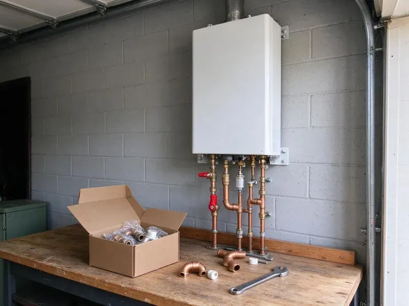

Water Softener Installation in Harrisburg, SD
Water softener installation in Harrisburg, SD with a written quote, from plumbers who test first.
- Free Hardness Test
- Fast Installs
- Insured Plumbers
- Quick Softener Installs

Water Softener Installation in Harrisburg, SD
Call (605) 480-9736 to schedule a water test and softener install.
Water Softeners for Harrisburg, SD Homes
HWR Plumbing looks at more than hardness before recommending a system. Iron, chlorine and how many people live in the house all change what softener you need and whether a carbon filter belongs in front of it. Sized right, it runs for years.
Some of what we do:
- New softener loops and bypass setups
- Full water testing
- Salt-based softeners with Fleck and Clack valves

Additional Plumbing Installation Services in Harrisburg, SD
We install water heaters, pumps, lines, and fixtures across Harrisburg, SD with precision workmanship that meets every local code.


Customers
Why Choose HWR Plumbing for Water Softener Installation in Harrisburg, SD?
We install softeners that match your hardness and daily water use. You get soft water at every tap, reasonable salt use and fewer problems down the road. Metered valves help most.
- Appliance Life, Shield your water heater, dishwasher and washer from mineral buildup.
- Good Systems, We install durable systems with good parts support.
- Licensed Plumbers, Our technicians are trained and experienced with all common systems.
Citywide Coverage
From older homes without loops to new builds, we serve every part of Harrisburg. A new loop can be added anywhere.
Experienced Team
Softeners, conditioners and filters come up every week. Programming valves and setting regeneration is routine for them.
Safety-First Approach
Our team works safely from start to finish. The result meets every rule that applies.
Trusted Certified Harrisburg Plumbing Services Professionals
At HWR Plumbing, we are proud to offer certified plumbing services throughout Harrisburg, SD. Credentials matter in this trade. Our plumbers hold recognized industry credentials, and they follow strict safety and quality rules on every repair, installation and maintenance call we run.
Call Us Now PHCC Plumbing Contractor Recognition
PHCC Plumbing Contractor Recognition Better Business Bureau (BBB) Accreditation
Better Business Bureau (BBB) Accreditation Angi Certified Pro
Angi Certified Pro ISO 9001 Quality Management Certification
ISO 9001 Quality Management CertificationLong-Lasting Water Softener Installs in Harrisburg, SD
Culligan Water Softener Installation in Harrisburg
Culligan systems are common in homes around here, and we install and connect them. Each install follows the brand's specs for drain, bypass and power, then we program it to your water test. Connections and setup included. A loop saves time.

Residential Water Softener Installation in Harrisburg
Hard water costs homeowners money in shorter appliance life and extra cleaning. We test the water, ask about daily use and choose a capacity that lets the system regenerate roughly once a week. Weekly is the sweet spot. Every detail is handled on one visit.
Water Softener Replacement in Harrisburg, SD
Older softeners lose ground as resin wears out, valve seals leak or injectors clog. While the old system is out, we inspect the loop and the drain, then install a newer metered unit. Metered valves save salt. You will notice soft water the same day.
Salt-Based Water Softener Installation in Harrisburg
Ion exchange is the only method that truly removes hardness from water. We install salt-based softeners with a resin tank sized to your grains per gallon, a brine tank, a bypass valve and a drain line that ends at a code-approved air gap. Then we program it. Regeneration time is usually set for 2 a.m.
Whole-Home Water Softener Installation in Harrisburg
Whole-home softeners treat every gallon that enters the house, right after the main shutoff. That protects every faucet, shower, water heater and appliance downstream, which is where hard water does most of its damage over the years. Sizing comes first. Your test result and water use decide the tank size.
Commercial Water Softener Installation in Harrisburg, SD
Restaurants, hotels and laundromats feel hard water in their equipment first. We install bigger tanks or twin alternating units for businesses, which keeps soft water flowing during regeneration. Equipment lasts longer. We schedule around your hours.
Water Softener Replacement Services in Harrisburg, SD
Worn-out softeners usually show it in one of two ways, hard water at the tap or a brine tank that never drops. Our crew pulls the old system, checks the loop and drain line and installs a model matched to your water today. Disposal is included. The work is usually done in a few hours.

Water Softener Replacement & Upgrades in Harrisburg, SD
Upgrading an old timer-based softener is one of the easiest ways to cut salt use. Modern units meter water use, send salt reminders by app and come in larger capacities for growing families. The savings add up. We swap it out in a few hours.
Water Softener Installation Near Me in Harrisburg, SD
Need water softener installation near me? Local crews bring test kits and stocked systems, which keeps scheduling quick. Plan on a few hours.
Local plumbers know local water, and HWR Plumbing has tested a lot of it. We see the same hardness ranges and iron problems around here over and over, so we know which systems hold up and which ones need extra filtration. We respond fast.
HWR Plumbing at a Glance
- Licensed and insured plumbers serving Harrisburg, SD
- Same-day appointments and 24/7 emergency response
- Clear written estimates, no hidden fees
- 4.8-star rated by 304+ South Dakota customers
Harrisburg Map
Harrisburg Information
- Population
- 9,435
- Area codes
- Local
- Service area
- Harrisburg and towns within a 40 mile drive
- Nearby
- Tea, Sioux Falls, Brandon, Madison
Mineral scale builds up quickly in water heaters, faucet aerators and fixtures here, so a softening system is a common upgrade for homeowners. A softener set up on the main line keeps that scale out of water heaters, pipes and fixtures in Harrisburg, SD.
Expert Services
Call HWR Plumbing for honest, reliable plumbing from people who know the trade in Harrisburg, SD.
Our Specialized Plumbing Services in Harrisburg, SD
At HWR Plumbing, we handle the full list of plumbing services across Harrisburg, SD. We go from leak detection all the way to full system installations, for homes and commercial buildings, and we do it quickly at a fair price. Explore our core services below:


Our Water Softener Installation Steps in Harrisburg, SD
Here is what to expect when you book a softener install with us.
Request a Quote
Call us at (605) 480-9736 to set up a visit. We test your water and give you a written quote with no obligation.
System Selection
Our plumbers help you choose the right system based on hardness, use and budget.
Installation
Licensed plumbers install the softener, with every connection done to code, then test it.
Frequently Asked Questions About Water Softener Installation in Harrisburg
Most installs cost $1,500 to $4,000 including equipment. A new loop typically adds $500 to $1,500 based on access to the main.
Homes with hard water usually benefit from one. Mineral scale builds up quickly in water heaters, faucet aerators and fixtures here, so a softening system is a common upgrade for homeowners. Softeners protect water heaters, fixtures and appliances from scale.
Softeners with Fleck and Clack control valves are what we install most. Our picks favor good performance and easy service.
White scale on faucets, spotty dishes, dry skin and a water heater that struggles are common signs. A water test confirms hardness.
Salt use depends on hardness, water use and how efficient the softener is. A family of four with fairly hard water might use 40 to 80 pounds of salt per month, and a metered high-efficiency model uses less. Metered valves save most.
Softeners remove hardness minerals using salt. Conditioners alter the minerals instead, and softeners are stronger for very hard water.
Less scale in pipes and appliances is the big one. Appliances last longer, you use less soap and detergent, skin and hair feel better and cleaning shower glass gets a lot easier. Clothes come out softer.
Some homeowners try it, but we recommend a plumber. Cutting into the main, setting the bypass, running the drain to an air gap and programming the valve all have to be right, or you get leaks and poor softening. It also protects the warranty.
What People Are Saying About Our Plumbing Experts?

Paul B.
Our pit pump ran nonstop even in dry weather. The plumber found the check valve was stuck open, so the same water kept cycling back into the pit. New valve, new float switch, done in an hour. It runs quiet now.
Sump Pump · Yankton, SD
Karen W.
After our third pinhole leak in copper, we stopped patching. HWR Plumbing gave us a written plan room by room and repiped the house in PEX while we stayed in it. The crew covered our floors every morning and cleaned up every night.
Repiping · Madison, SD
Daniel K.
A pipe burst in the garage ceiling at 11 at night. Someone answered on the second ring, and the plumber was in my driveway about fifty minutes later. He shut off the main, cut out the split section, and had water back on before 2 am.
Emergency Plumbing · Yankton, SDMark T.
The floor drain in our office break room backed up every few weeks. The plumber ran a cable, then put a camera down and found roots at a joint about thirty feet out. Seeing it on the screen made the decision easy.
Drain Cleaning · Yankton, SD
Laura S.
Our 40 gallon tank started leaking from the bottom after thirteen years. The tech hauled the old one out, set a new unit with a fresh expansion tank, and had hot water running in about four hours. He took the old tank with him too.
Water Heater Replacement · Vermillion, SDPatricia H.
We had a slab leak that two other companies could not find. HWR Plumbing located it in under an hour with a listening device. They rerouted the line through the attic instead of breaking up the floor, so we kept our kitchen tile.
Slab Leak Repair · Harrisburg, SD